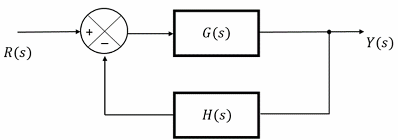
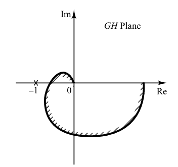
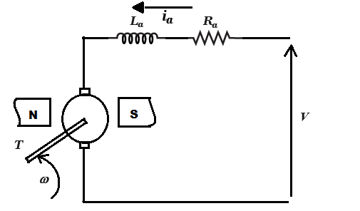
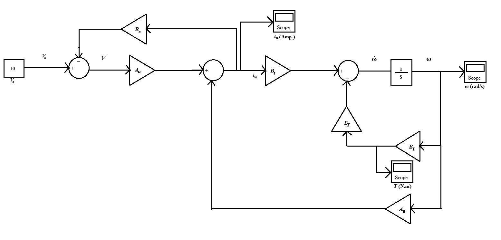

Simulation of Control Systems 
Theory
In this experiment, the behaviour of some control systems will be analysed and simulation of their responses will be observed with the help of four problem statements.
Problem 1
Observe the output response of a unity negative feedback system (Fig. 1) for different values of damping ratio (ζ = 0, 0.2, 0.4, 0.6, 0.8, 1.0) upto 10 sec when the inputs applied to the system are the unit step and unit impulse.
Plot its rise time, settling time and percentage maximum over shoot for different values of ζ for step input. Also plot three dimensional diagram of unit step and unit impulse response curves of the given system
(taking x-axis as time (t), y-axis as ζ and z-axis as an output response).

Fig. 1. A simple second order system
Unity negative feedback system

Fig. 2. Block diagram of a negative feedback transfer function
If the output or some part of the output is returned to the input side and utilized as part of the system input, then it is known as feedback. Feedback plays an important role in improving the
performance of control systems.
Negative feedback reduces the error between the reference input R(s) and system output. The above figure (Fig. 1) shows the block diagram of the negative feedback control system.
Since H(s) = 1, it is known as a unity negative feedback system.
Transfer function of a negative feedback control system is,
$$T(s) = \frac{G(s)}{1 + G(s)H(s)}$$
where,
T(s) is the transfer function of a closed loop system (or the overall feedback control system).
G(s) is the plant transfer function or forward path transfer function.
H(s) is the feedback transfer function.
G(s)H(s) is called the open loop transfer function.
Second order system
The open loop transfer function of a second order unity negative feedback system is given by,
$$G(s) = \frac{\omega_{n}^2}{s ( s + 2 \zeta \omega_n )}$$
The closed loop transfer function of a second order unity negative feedback system is given by,
$$\frac{Y(s)}{R(s)} = \frac{G(s)}{1 + G(s)} = \frac{\omega_{n}^2}{s^2 + 2 \zeta \omega_n s + \omega_{n}^2}$$
where,
R(s) = Laplace transform of the input signal r(t),
Y(s) = Laplace transform of the output signal y(t),
ζ = Damping ratio,
ωn = Natural frequency of oscillation.
The characteristic equation of the second order system is given by equating the denominator of the closed loop transfer function to zero.
$$( s^2 + 2 \zeta \omega_n s + \omega_{n}^2 ) = 0$$
The expression for the response of the second order system can be written as,
$$Y(s) = \frac{ \omega_{n}^2 }{ s^2 + 2 \zeta \omega_n s + \omega_{n}^2 } R(s) \tag{1}$$
When ζ = 0, the system is undamped.
When ζ = 1, the system is critically damped.
When 0 < ζ < 1, the system is underdamped.
Unit step response of second order system
Apply unit step signal at the input of the second order system,
$$r(t) = u(t)$$
Taking laplace transform on the both sides
$$R(s) = \frac{1}{s}$$
Case 1 : when ζ = 0 i.e. system is undamped
The equation 1 becomes,
$$Y(s) = \frac{\omega_{n}^2}{s^2 + \omega_{n}^2} R(s)$$
Substituting
$$R(s) = \frac{1}{s}$$
$$Y(s) = \frac{\omega_{n}^2}{s ( s^2 + \omega_{n}^2 )} $$
Taking the inverse laplace transform on both the sides, we have,
$$y(t) = ( 1 - cos ( \omega_n t )) \ u(t) \tag{2}$$
Equation (2), shows that the unit step response of an undamped system is a signal which oscillates periodically with frequency ωn and an offset of 1, never settling to a single final value.
Case 2 : when ζ = 1 i.e. system is critically damped
The equation 1 becomes,
$$Y(s) = \frac{\omega_{n}^2}{s^2 + 2 \omega_n s + \omega_{n}^2} R(s) = \frac{\omega_{n}^2}{( s + \omega_{n} )^2} R(s)$$
Substituting
$$R(s) = \frac{1}{s}$$
$$Y(s) = \frac{\omega_{n}^2}{ s (s + \omega_{n} )^2 } $$
After the partial fraction, taking the inverse laplace transform on both the sides, we have,
$$y(t) = ( 1 - e^{- \omega_n t} - \omega_n t e^{- \omega_n t} ) \ u(t) \tag{3}$$
When the system is critically damped then, the equation (3) shows, that the unit step response of the second order system would try to reach the steady state step input.
$$For \ t \to \infty, \ y(t) = u(t)$$
Case 3 : when 0 < ζ < 1 i.e. system is underdamped
The equation 1 can be written as,
$$Y(s) = \frac{\omega_{n}^2}{(( s + \zeta \omega_{n} )^2 + \omega_{n}^2 ( 1 - \zeta^2 ))} R(s)$$
Substituting
$$R(s) = \frac{1}{s}$$
$$Y(s) = \frac{\omega_{n}^2}{s (( s + \zeta \omega_{n} )^2 + \omega_{n}^2 ( 1 - \zeta^2 ))} $$
After the partial fraction, taking the inverse laplace transform on both the sides, we have,
$$y(t) = \left( 1 - \frac{e^{- \zeta \omega_n t}}{\sqrt{1 - \zeta^2}} sin ( \omega_n \sqrt { 1 - \zeta^2 } \ t + \phi)\right) \ u(t), \ where \ \phi = cos^{-1}(\zeta)\tag{4}$$
Equation (4) shows that when the system is underdamped, its unit step response exhibits oscillations whose amplitude decreases over time.
In other words, the system’s output oscillates but the oscillations gradually diminish until the response settles.
Rise Time (time to rise from 10% to 90% of final value):
$$T_r = \frac{2.16 \zeta + 0.6}{\omega_n}, \ valid \ for \ (0.3 \leq \zeta \leq 1) \tag{5}$$
Settling Time (to within 2% of final value):
$$T_s = \frac{4}{\zeta \omega_n} \tag{6}$$
Percent maximum overshoot:
$$P.O = e^{\frac{-\zeta \pi}{\sqrt{1 - \zeta^2}}} \times 100 \tag{7}$$
Unit impulse response of second order system
Apply unit impulse signal at the input of the second order system,
$$r(t) = \delta(t)$$
Taking laplace transform on the both sides
$$R(s) = 1$$
The expression for the response of the second order system for unit impulse input can be written as,
$$Y(s) = \frac{ \omega_{n}^2 }{ s^2 + 2 \zeta \omega_n s + \omega_{n}^2 } \tag{8}$$
After the necessary calculations, taking inverse laplace on both the sides, we get,
Case 1 : when ζ = 0 i.e. system is undamped
$$y(t) = \omega_n sin ( \omega_n t) \ for \ t \ \geq \ 0 \tag{9}$$
Case 2 : when ζ = 1 i.e. system is critically damped
$$y(t) = \omega_{n}^2 t e^{- \omega_n t} \ for \ t \ \geq \ 0 \tag{10}$$
Case 3 : when 0 < ζ < 1 i.e. system is underdamped
$$y(t) = \frac{ \omega_n e^{- \zeta \omega_n t}}{\sqrt{(1 - \zeta^2)}} sin ( \omega_n \sqrt {( 1 - \zeta^2 )} \ t ) \ for \ t \ \geq \ 0 \tag{11}$$
Problem 2
Plot the root loci for the unity negative feedback system given in Fig. 1. where, $$G( s ) = K G_1( s ) = \frac{K}{s ( s + 1 )( s + 2 )}$$ Assume that the amplifier gain (K) is varied from 0 to 50 (We assume that the value of gain K is nonnegative.). Indicate the value of the gain K for which the root locus crosses the imaginary axis. Plot the output response for K = 0.4, 2, 6 and 12 when the inputs are unit step and unit impulse.
The characteristic equation of the system (considered in problem-2) is $$1 + K \ G_1(s) H(s) = 0 \tag{12}$$
The root locus is the path of the roots of characteristic equation traced out in s-plane as gain K is changed from 0 to ∞ and it is symmetrical about the real axis.
Construction of Root Locus when K ≥ 0 and the system is a negative feedback system
Branch
The root locus branches start at the open loop poles and end at open loop zeros. So, the number of root locus branches N is equal to the number of finite open loop poles P or the number of finite open loop zeros Z, whichever is greater.
Mathematically, the number of root locus branches N can be written as
$$N = P \tag{13}$$
when
$$P\geq Z$$
$$N = Z \tag{14}$$
when
$$Z\gt P$$
If odd number of open loop poles and zeros exist to the left side of a point on the real axis, then that point is on the root locus branch.
Centroid (α)
$$\alpha = \frac{\sum{Real \ part \ of \ finite \ open \ loop \ poles} - \sum{Real \ part \ of \ finite \ open \ loop \ zeros}}{P - Z} \tag{15}$$
Angle of asymptotes (θ)
$$\theta = \frac{(2q + 1)180^\circ}{P - Z} \tag{16}$$
where q = 0, 1, 2,...(P-Z)-1
Break-away and Break-in points
If there exists a real axis root locus branch between two open loop poles, then there will be a break-away point in between these two open loop poles.
If there exists a real axis root locus branch between two open loop zeros, then there will be a break-in point in between these two open loop zeros.
Steps to find break-away and break-in points
Write K in terms of s from the characteristic equation (equation 12).
Differentiate K with respect to s and make it equal to zero. Substitute these values of s in the above equation (found from step 1).
The values of s for which the K value is positive are the break points.
Problem 3
Check the stability of the unity negative feedback system given in Fig.1. where,
$$G ( s ) = \frac{2}{s ( s + 1 )( s + 2 )}, \ H ( s ) = 1$$
by drawing the Bode and Nyquist diagrams and hence indicate gain margin, phase margin, gain crossover frequency, phase crossover frequency.
Nyquist Stability Criterion
This criterion can be expressed as
$$Z = N + P \tag{17}$$
where,
Z = number of zeros of 1+G(s)H(s) in the right-half s plane
N = number of clockwise encirclements of the –1+j0 point
P = number of poles of G(s)H(s) in the right-half s plane
If P is not zero, for a stable control system, we must have Z=0,or N= – P,
which means that we must have P counterclockwise encirclements of the –1+j0 point. If G(s)H(s)
does not have any poles in the right-half s plane, then Z = N. Thus, for stability there must be no encirclement of the –1+j0 point by the
G(jω)H(jω) locus.
The stability of such a system can be determined by seeing if the –1 + j0 point is enclosed by the Nyquist plot of G(jω)H(jω).
Let us assume the region enclosed by a Nyquist plot, shown in Fig. 3. For stability, the –1 + j0 point must lie outside the shaded region.

Fig. 3. Region enclosed by a Nyquist plot
Stability Analysis using Nyquist Plots
From the Nyquist plots, we can identify whether the control system is stable, marginally stable or unstable based on the values of the following parameters.
Gain crossover frequency (ωgc) and phase crossover frequency (ωpc).
Gain margin (GM) and phase margin (PM)
Phase crossover frequency (ωpc)
The frequency at which the Nyquist plot intersects the negative real axis (phase angle is 180°) is known as the phase crossover frequency. It is denoted by ωpc.
Gain crossover frequency (ωgc)
The frequency at which the Nyquist plot is having the magnitude of one is known as the gain crossover frequency. It is denoted by ωgc.
The stability of the control system based on the relation between phase crossover frequency and gain crossover frequency is discussed below (the
open-loop transfer function is considered as minimum phase (in other words open-loop poles and zeros are in the left half of complex plane)).
i) If the phase crossover frequency (ωpc) is greater than the gain crossover frequency (ωgc), then the system is stable.
ii) If the phase crossover frequency (ωpc) is equal to the gain crossover frequency (ωgc), then the system is marginally stable.
iii) If phase crossover frequency (ωpc) is less than gain crossover frequency (ωgc), then the system is unstable.
Gain Margin
The gain margin (GM) is equal to the reciprocal of the magnitude of the Nyquist plot at the phase crossover frequency.
$$GM = \frac{1}{M_{pc}} \tag{18}$$
where, Mpc is the magnitude in normal scale at the phase crossover frequency.
Phase Margin
The phase margin (PM) is equal to the sum of 180° and the phase angle at the gain crossover frequency.
$$PM = 180^\circ + \phi_{gc} \tag{19}$$
where, φgc is the phase angle at the gain crossover frequency.
The stability of the control system based on the relation between the gain margin and the phase margin is discussed below (the
open-loop transfer function is considered as minimum phase (in other words open-loop poles and zeros are in the left half of complex plane)).
i) If the gain margin (GM) is greater than one and the phase margin (PM) is positive, then the control system is stable.
ii) If the gain margin (GM) is equal to one and the phase margin (PM) is zero degrees, then the control system is marginally stable.
iii) If the gain margin (GM) is less than one and / or the phase margin (PM) is negative, then the control system is unstable.
Bode Plot
The Bode plot or the Bode diagram consists of two plots :-
- Magnitude plot
- Phase plot
In both the plots, x-axis represents angular frequency (logarithmic scale). whereas, yaxis represents the magnitude (linear scale) of open loop transfer function in the magnitude plot and the phase angle (linear scale) of the open loop transfer function in the phase plot.
The magnitude of the open loop transfer function in dB is -
$$M = 20 \ log \ |G ( j \omega ) H ( j \omega )| \tag{20}$$
The phase angle of the open loop transfer function in degrees is -
$$\phi = \angle G ( j \omega ) H ( j \omega ) \tag{21}$$
Note − The base of logarithm is 10.
Problem 4
Obtain the system response of a permanent magnet dc motor (Fig. 4) from the simulation model (Fig. 5). Observe speed of the motor (ω), armature current (ia) and load torque (T).
Assume J is the inertia of the motor, b is the viscous friction coefficient, V is the supply voltage and motor is running without load.

Fig. 4. A shunt dc motor diagram
where, ω : Speed (rad/sec) of the motor.
ia : Armature current (amp.)
Ra : Armature resistance (ohms)
La : Armature inductance (henry)
T : Load torque (newton-m)
V : Supply voltage (volts)
DC motor simulation model

Fig. 5. Simulation model of dc motor
Dynamic equations:
Mechanical part:
$$J \dot{\omega} = T_r - b \omega - T \tag{22}$$
Eletrical part:
$$V = L_a i_a + R_a i_a + E_b \tag{23}$$
ia : Armature current (amp.)
Ra : Armature resistance (ohms)
La : Armature inductance (henry)
T : Load torque (newton-m)
ω : Speed (rad/sec)
La : Armature inductance (henry)
V : Supply voltage (volts)
J :Inertia of the motor (kgm2)
Tr = developed torque = K ia, K = Torque constant
Eb = Ke ω = back e.m.f, Ke = back e.m.f constant,
b : Viscous friction coefficient.
Most DC motors have a negligible La such that La = 0. After eliminating internal variables Tr and Eb the following equations can be obtained.
$$i_a = \frac{1}{R_a} V - \frac{K_e}{R_a} \omega = A_u V - A_0 \omega \tag{24}$$
$$\dot{\omega} = \frac{K}{J} i_a - \frac{b}{J} \omega - \frac{1}{J} T \tag{25}$$
$$\dot{\omega} = B_i i_a - B_0 \omega - B_T T \tag{26}$$
The parameters are given below:
K = 0.015 newton-m/A, Ke = 0.066 V s/rad, Ra = 3.3 Ω, b = 0 and J = 30 × 10-6 kgm2 such that Au = 0.303, A0 = 0.02, Bi = 500, B0 = 0 and BT = 33333.
The motor assumed supplied from a voltage source, modeled by the following equation
$$V = V_s - R_s i_a \tag{27}$$
where Vs = 10 V and Rs = 0.3 Ω. The load is assumed a pure viscous load, represented by a load torque equation
$$T = B_L \omega \tag{28}$$
BL = 0.00001 Nms/rad.